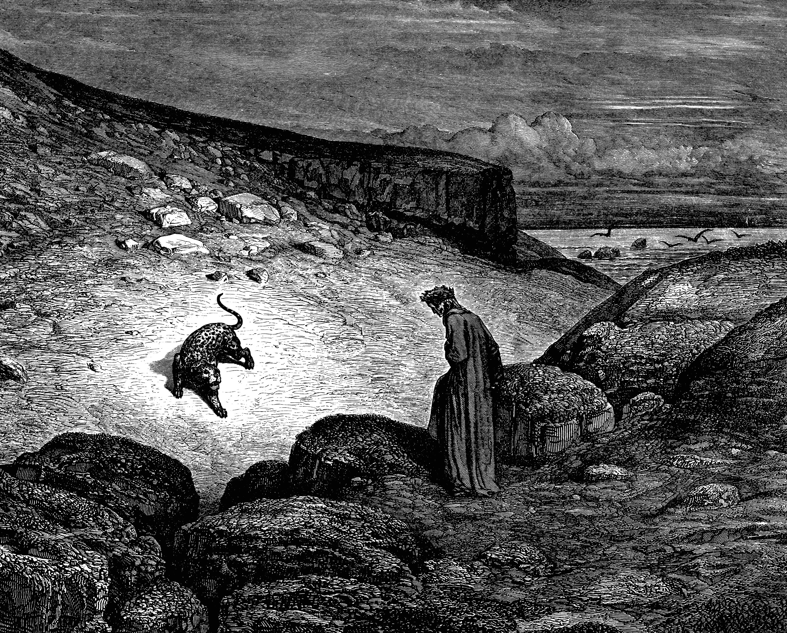

Dante si smarrisce in una selva oscura, allegoria del peccato, e cerca scampo verso un colle illuminato. Il cammino gli è però precluso da tre fiere (lonza, leone e lupa), simboli dei vizi che ostacolano la salvezza. In suo soccorso appare l’ombra di Virgilio, che lo esorta a intraprendere un percorso alternativo attraverso i regni ultraterreni.
Dante esita, temendo di non essere all'altezza di Enea o San Paolo. Virgilio lo rincuora svelando che il viaggio è un comando divino: Beatrice, sollecitata dalla Vergine e da Santa Lucia, è scesa nel Limbo per inviarlo in suo aiuto. Rassicurato da tale protezione, Dante accetta il destino e segue la sua guida.
